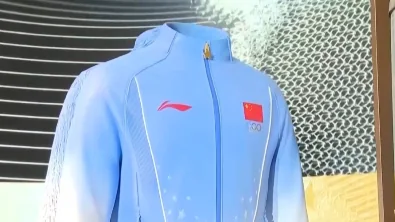
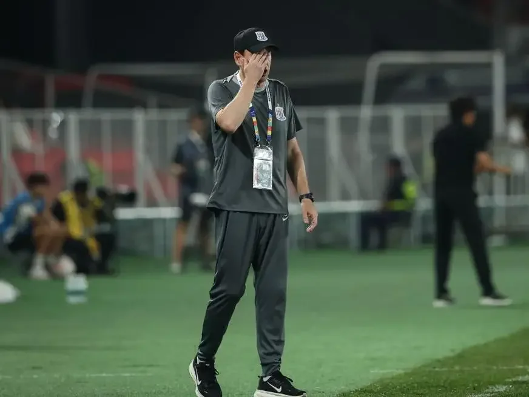
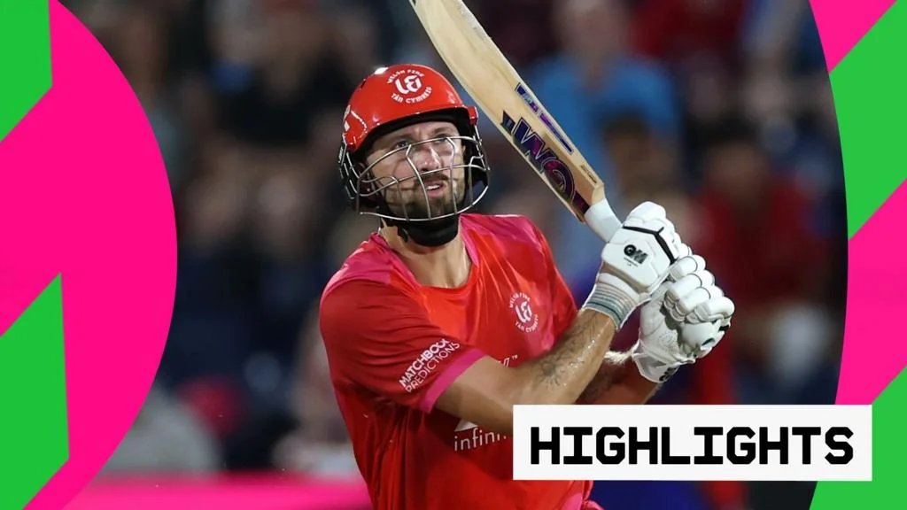
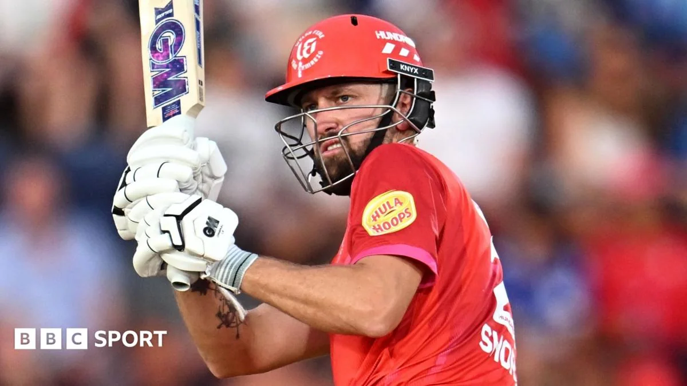

01
“熠熠星辉”点亮亚运：中国代表团领奖装备正式发布
第20届亚运会中国体育代表团领奖装备揭开面纱，设计融合传统文化与现代科技。

今天上午，第20届亚运会中国体育代表团的领奖装备正式发布，主题定为“熠熠星辉”。这款装备的设计灵感来源于中国传统文化中的星辰元素，寓意运动员们在赛场上如星光般闪耀。装备采用了先进的透气面料和人体工学剪裁，确保运动员在领奖时既能展现风采，又能保持舒适。据发布方介绍，整套装备包括领奖服、运动鞋和配饰，色彩以红白为主，辅以金色点缀，既体现庄重又不失活力。此次发布由多家权威媒体同步报道，包括中国日报网、搜狐网等，显示出社会各界对亚运会的热切期待。
从设计理念来看，“熠熠星辉”并非简单的视觉呈现，而是将中国传统文化中的星象图纹融入服装纹样，星轨线条寓意运动员的拼搏轨迹。这种设计不仅是对传统文化的传承，更是对运动员精神的致敬。在科技应用方面，领奖服采用环保再生纤维，响应可持续发展理念；运动鞋内置缓震模块，减少运动员长时间站立时的疲劳。这些细节体现了现代体育科技的进步，也展示了中国制造的高水平。
对于普通运动爱好者来说，这套装备的发布提供了一个重要的启示：选择运动装备时，不必追求顶级配置，但应关注面料的透气性和剪裁的合身度，这直接影响运动体验。例如，跑步时穿着透气性差的衣物，会导致体温过高、汗水无法及时蒸发，影响表现甚至引发不适。因此，在选购运动服装时，可以优先考虑速干、透气等功能性面料，并根据自身运动类型选择合适的剪裁。此外，环保材质也是一个值得关注的趋势，既有利于环境，也往往意味着更舒适的穿着感受。总之，好的装备不在于价格，而在于是否适合你的运动需求。
伊恩的观察
对于普通运动爱好者，选择运动装备时不必追求顶级配置，但应关注面料的透气性和剪裁的合身度，这直接影响运动体验。
02
“熠熠星辉”背后的匠心：亚运领奖装备细节解读
从设计理念到科技应用，亚运领奖装备的每一处细节都值得品味。

继上午的发布后，关于“熠熠星辉”领奖装备的更多细节被媒体披露。这套装备不仅外观亮眼，更在功能上下足功夫。领奖服采用环保再生纤维，响应可持续发展理念；运动鞋则内置缓震模块，减少运动员长时间站立时的疲劳。设计团队表示，他们从中国传统的星象图纹中提取灵感，将星轨线条融入服装纹样，寓意运动员的拼搏轨迹。此外，装备上的徽章采用特殊工艺，在不同光线下呈现渐变效果，象征荣耀与梦想。这些设计既体现了对中国传统文化的传承，也展示了现代体育科技的进步。
从功能角度看，领奖装备的细节设计充分考虑了运动员的实际需求。例如，领奖服的剪裁经过人体工学优化，确保运动员在站立、挥手等动作中保持舒适；运动鞋的缓震模块则能有效分散压力，减少长时间站立带来的疲劳。这些设计虽然看似微小，却体现了对运动员的关怀。同时，环保再生纤维的使用，也传递出绿色办赛的理念，符合国际体育赛事的发展趋势。
对于普通人而言，这些细节提供了选购运动服装的实用参考。首先，关注面料的环保性，再生纤维不仅对环境友好，往往也具备良好的透气性和吸湿排汗功能。其次，留意服装的剪裁设计，合身的剪裁能减少运动时的摩擦，提升舒适度。最后，功能设计如缓震、支撑等，应根据自身运动特点选择。例如，跑步者可以选择带有缓震功能的跑鞋，而健身爱好者则更适合支撑性强的训练鞋。总之，从这些专业装备中，我们可以学到如何科学地选择适合自己的运动装备，从而提升运动体验和效果。
伊恩的观察
普通人选购运动服装时，可以留意环保材质和功能设计，例如速干、防臭等特性，这些细节能提升日常锻炼的舒适度。
03
中超换帅潮：情怀让位于成绩，三分之一球队已换帅
本赛季中超联赛已有约三分之一球队更换主教练，成绩压力成为主因。

中超联赛本赛季进行至今，已有大约三分之一的球队更换了主教练。这一现象反映出联赛竞争的白热化，以及俱乐部管理层对成绩的急切追求。据报道，多支球队在开局不利后迅速做出换帅决定，希望以此扭转颓势。例如，一些传统强队因排名靠后，不得不放弃长期规划，转而寻求短期刺激。这种“情怀让位于成绩”的做法，在足球界并不罕见，但如此集中的换帅潮仍引发关注。分析人士指出，频繁换帅可能影响球队战术稳定性，但也可能带来新的活力。对于俱乐部而言，如何在短期成绩和长期发展之间找到平衡，是永恒的课题。
换帅潮的背后，是职业足球残酷的竞争逻辑。在联赛中，成绩是衡量教练最直接的标准，一旦球队战绩不佳，教练往往成为替罪羊。然而，频繁换帅并非总是灵丹妙药。新教练需要时间熟悉球队，球员也需要适应新战术，这可能导致球队在短期内表现更不稳定。从历史经验看，一些球队在换帅后确实迎来反弹，但也有不少球队陷入恶性循环。因此，俱乐部在做出换帅决定时，需要权衡短期利益和长期规划。
对于普通运动爱好者来说，这一现象提供了一个重要的启示：在健身或训练中，频繁改变计划或教练风格并非好事。很多人健身时，今天尝试一种方法，明天又换另一种，结果往往事倍功半。实际上，坚持一套科学合理的训练计划，并持续执行一段时间，才能看到明显效果。就像球队需要稳定的战术体系一样，我们的身体也需要适应和进步的过程。因此，建议普通人在开始一项运动时，先制定一个可行的计划，并坚持至少三个月，再根据效果调整。这样不仅能提高效率，还能避免因频繁变化而导致的挫败感。
伊恩的观察
对于业余球队或健身爱好者，频繁改变训练计划或教练风格并非好事，坚持一套科学方案往往比不断推倒重来更有效。
04
The Hundred：Welsh Fire轻取Southern Brave，肖特闪耀全场
在The Hundred板球赛中，Welsh Fire以压倒性优势击败Southern Brave，马特·肖特表现抢眼。

昨晚的The Hundred板球赛，Welsh Fire对阵Southern Brave，最终Welsh Fire轻松获胜。这场比赛的关键在于Welsh Fire的击球手马特·肖特，他打出了精彩的半世纪得分，为球队奠定了胜局。Southern Brave的进攻被Welsh Fire的投球手牢牢压制，全场得分偏低，未能构成威胁。BBC Sport的报道称，肖特的表现堪称“出色”，他不仅击球精准，跑动也极为积极。这场胜利让Welsh Fire在积分榜上追平了领头羊。The Hundred是英国近年推出的新型板球赛事，每队只有100球，节奏更快，更适合现代观众。
从比赛过程来看，Welsh Fire的胜利并非偶然。首先，他们的投球手在开场阶段就有效限制了Southern Brave的得分，使得对手始终无法建立优势。其次，肖特在击球时展现了极高的专注度和技巧，他多次精准地击出边界球，迅速积累了分数。这种个人能力与团队策略的结合，是Welsh Fire获胜的关键。相比之下，Southern Brave在进攻端缺乏有效的应对，导致全场得分偏低，最终无力回天。
对于普通人来说，这场比赛提供了一个关于目标设定的启示。板球中的“半世纪”得分，类似于健身中的“平台期”突破。在运动中，我们常常会遇到进步缓慢的阶段，这时需要耐心和技巧，而不是急于求成。例如，跑步者可能会在某个配速上停滞不前，这时可以尝试调整呼吸节奏、增加间歇训练，或者改变路线，以突破瓶颈。同样，在力量训练中，如果重量无法增加，可以尝试改变动作角度或增加组数。总之，设定小目标，逐步提升，是克服平台期的有效方法。
伊恩的观察
板球中的“半世纪”类似健身中的“平台期”，突破需要耐心和技巧。普通人运动时，不妨设定小目标，逐步提升，避免急于求成。
05
肖特半世纪助Welsh Fire取胜，积分榜并列榜首
马特·肖特再次证明自己，Welsh Fire击败Southern Brave后，与榜首球队积分持平。

在另一篇报道中，BBC Sport详细描述了马特·肖特的半世纪表现。他面对Southern Brave的投球，沉着应对，多次打出边界球，最终帮助球队在低分对决中胜出。这场比赛中，Welsh Fire的投球手也功不可没，他们限制了对手的得分，使得Southern Brave始终无法提速。肖特赛后表示，球队的配合是关键。这场胜利后，Welsh Fire与积分榜第一的球队并列，展现了夺冠潜力。The Hundred赛事以其快节奏和娱乐性吸引了大量新球迷，肖特这样的明星球员更是提升了赛事的观赏性。
从战术层面分析，Welsh Fire的成功在于团队协作。肖特的个人能力固然突出，但如果没有投球手的出色发挥，比赛结果可能不同。在板球中，投球手和击球手的配合至关重要，投球手通过控制球速和线路来限制对手，击球手则利用机会得分。这种团队策略在The Hundred这种快节奏赛事中尤为关键，因为每队只有100球，任何失误都可能影响最终结果。肖特在赛后也强调了配合的重要性，这体现了职业运动员的团队意识。
对于普通人参与团队运动，这一案例提供了宝贵的经验。无论是篮球、足球还是其他团队项目，个人能力固然重要，但配合和战术执行才是胜利的基石。例如，在篮球比赛中，即使有得分能力强的球员，如果缺乏传球和跑位配合，也很难赢得比赛。因此，建议普通人在参与团队运动时，多与队友沟通，理解战术意图，并积极执行。这样不仅能提升团队整体表现，也能让个人在团队中找到更合适的角色，从而获得更好的运动体验。
伊恩的观察
团队运动中，个人能力固然重要，但配合和战术执行才是胜利的基石。普通人参与团队运动时，多与队友沟通，理解战术意图，能事半功倍。
无障碍文字记录
伊恩 嘿，各位运动迷，我是伊恩。今天2026年8月4号，星期二。先问一句：你关注过亚运会的领奖装备吗？就是运动员站上领奖台时穿的那身衣服。今天上午，第20届亚运会中国体育代表团的领奖装备正式发布了，名字挺有诗意，叫“熠熠星辉”。同时，中超赛场上，本赛季已经有三分之一球队换了主教练，情怀让位于成绩，这事儿你怎么看？还有，远在英国的The Hundred板球联赛，Welsh Fire在一场低比分鏖战中笑到了最后。咱们一个一个来聊。
伊恩 今天早上，中国日报网、搜狐网、手机新浪网等多家媒体，几乎同时发布了第20届亚运会中国体育代表团领奖装备的消息，主题叫“熠熠星辉”。目前公开的信息里，只有这个名称和发布这件事本身，具体的设计细节、面料科技、颜色款式，官方还没有放出更多。但光是这个名字，就足够让人浮想联翩了。
你想想，运动员在赛场上拼尽全力，站上领奖台的那一刻，身上穿的不只是衣服，更是一种象征。领奖装备历来是大赛前的重头戏，它承载着国家形象、体育精神，也凝聚着设计师和运动品牌的心血。从过去的“番茄炒蛋”到如今的“熠熠星辉”，每一套装备背后，都是对运动员的致敬，也是对观众的视觉呈现。
不过，这套装备离普通人的生活确实有点远。你可能不会穿着它去跑步，也不会在健身房穿上它。但“熠熠星辉”这个名字，倒是可以给我们一点启发：运动场上，每个人都可以是自己的明星。你不需要站上亚运会的领奖台，但你可以通过每一次锻炼，让自己发光。
说到这，我想起很多刚开始运动的朋友，总觉得自己不够格，跑得慢、举得轻，就不敢发朋友圈。其实，运动的意义不在于和别人比，而在于和自己比。你今天比昨天多跑了一公里，多做了两个俯卧撑，那就是你的“熠熠星辉”。
当然，领奖装备的发布，也意味着亚运会离我们越来越近了。对于运动员来说，这是四年一度的盛会，是他们职业生涯的高光时刻。而对于我们普通人，或许可以借着这股热潮，给自己定个小目标，比如每天走够一万步，或者周末去球场上挥洒汗水。
最后，我想说，无论你是在电视机前为运动员加油，还是自己在运动场上挥汗如雨，都别忘了，运动带来的快乐和健康，才是最重要的。希望每个人都能在自己的生活里，找到那份“熠熠星辉”的闪耀。
听众 伊恩，领奖装备除了好看，有啥实际功能吗？比如面料是不是特别透气？
伊恩 好问题。领奖装备通常不只是为了拍照好看，它得兼顾舒适性和功能性。比如，领奖时运动员可能刚结束比赛，身体还在散热，所以面料一般会选用速干、透气的材质，帮助调节体温。另外，有些装备还会加入抗菌除臭技术，因为运动员可能要在领奖台上待一阵子，还要接受采访、合影。当然，具体到“熠熠星辉”这身，我没拿到详细参数，但行业惯例如此。你平时运动选衣服，也可以参考这个思路：别只看颜值，速干、透气、合身，才是王道。
伊恩 今天中超传来一个消息，本赛季已经有三分之一的中超球队换了主教练。中超通常有16支球队，三分之一就是5支左右。这个数字放在赛季中期，确实不算少。搜狐网今天的文章标题很直白：情怀让位于成绩。这背后其实是俱乐部在成绩压力下的现实选择——当球队战绩不理想，换帅往往是最直接的应对方式。
换帅这件事，在足球圈里从来不新鲜，但每次都能引发讨论：是教练不行，还是球员不行？是战术问题，还是管理问题？很多时候，换帅就像换一种运气，但效果往往因人而异。有些球队换帅后立刻反弹，有些则继续沉沦。
为什么俱乐部这么爱换帅？因为成绩是硬指标。联赛排名、保级压力、球迷期待，每一项都压在俱乐部头上。当球队连续输球，球迷会喊下课，媒体会质疑，管理层坐不住，换帅就成了最立竿见影的“止痛药”。但换帅真的能解决根本问题吗？不一定。如果球队阵容老化、伤病满营、更衣室矛盾重重，换帅可能只是暂时缓解，治标不治本。
对于咱们普通球迷来说，看球别太较真。成绩起伏是常态，没有哪支球队能一直赢。与其纠结教练去留，不如享受比赛过程。足球的魅力就在于不确定性，今天输，明天赢，都是故事的一部分。当然，如果你是某支球队的死忠，看到心爱的球队频繁换帅，心里肯定不好受。但换个角度想，新教练带来新战术，说不定能激活球队，打出惊喜。
这轮换帅潮，也反映出中超的竞争激烈。每支球队都在为成绩拼命，谁都不想掉队。接下来的比赛，这些新帅能交出怎样的答卷，值得关注。咱们就搬好小板凳，看球吧。
听众 伊恩，换帅真的能立竿见影吗？为啥有些球队换了帅还是不行？
伊恩 这个问题问到点子上了。换帅有时候能带来“换帅效应”，因为新教练会带来新战术、新训练方法，球员也会为了证明自己而更努力。但长期来看，球队成绩取决于整体实力、阵容深度、管理层稳定性。如果球队本身问题很多，比如球员老化、引援不力、更衣室矛盾，那换帅也只是治标不治本。就像你跑步，换个跑鞋能提升一点成绩，但如果体能不行，跑鞋再贵也白搭。所以，换帅不是万能药，它更多是给球队一个调整和振作的机会。
伊恩 今天咱们把目光投向英国，The Hundred板球联赛。Welsh Fire对阵Southern Brave，BBC的标题是“Superb Short half-century guides Fire past Brave”，马特·肖特（Matt Short）用一记漂亮的半世纪击球，带领Welsh Fire战胜对手，并且在积分榜上追平了榜首。另外还有报道说，这是一场低得分的比赛，但Welsh Fire“轻松取胜”（make light work of）。具体比分我没拿到，但关键点在于，马特·肖特的表现成为了胜负手。
你可能对板球不太熟，但它的魅力在于策略和瞬间的爆发。肖特这个半世纪，就是在关键时刻站了出来，用个人能力改变了比赛走势。这就像篮球里的关键三分，足球里的绝杀，体育的魅力就在于此。
先说说这个“半世纪”是什么。板球里，击球手得分超过50分，就叫“半世纪”，是个里程碑。肖特今天做到了，而且是在一场低得分的比赛里。低得分意味着什么？双方总分都不高，每一分都金贵。这时候，肖特的50分就显得格外重要，几乎是凭一己之力把球队扛在了肩上。
为什么他能做到？板球击球手面对的是时速130公里以上的投球，还要判断旋转、弹跳，在零点几秒内决定挥拍还是躲闪。肖特能打出半世纪，靠的是扎实的基本功、冷静的头脑，还有对场上局势的阅读。他可能选择了保守的防守，等对手犯错，然后抓住机会得分。这种耐心和爆发力，是长期训练的结果。
那这场胜利对Welsh Fire意味着什么？积分榜上追平了榜首，说明他们现在有争冠的主动权。对于球队来说，这不仅是两分，更是士气上的提升。肖特的表现，也让他自己成为联赛MVP的热门人选。
你可能会问，板球这么复杂，普通人怎么欣赏？其实不用懂所有规则，你只需要看击球手和投球手的对决，就像看剑客过招。每一次挥拍，都是一次博弈。而且板球比赛节奏有张有弛，有紧张的时刻，也有悠闲的间隙，很适合周末下午配杯茶慢慢看。
如果你也想尝试板球，不需要专业装备，找个空地，一个球拍一个球，就能玩起来。它锻炼你的反应和手眼协调，还能培养团队合作。就像肖特今天做的，关键时刻要敢于站出来，承担压力。
最后，肖特的表现提醒我们，体育的魅力在于个人英雄主义和团队协作的完美结合。一个人能改变比赛，但背后是教练的战术、队友的支持。咱们普通人运动时也一样，既要练好个人技术，也要学会和伙伴配合。好了，今天就说这么多，明天见。
听众 伊恩，板球规则太复杂了，半世纪是啥意思？能简单讲讲吗？
伊恩 没问题。板球里的“半世纪”就是指一名击球手单场得分达到50分。在板球中，击球手要面对投球手投出的球，用球棒击球得分，跑动得分或者把球打到边界线外。得分超过100分叫“世纪”，50分就是“半世纪”，算是很不错的个人表现。The Hundred这个联赛呢，每队只有100个球，节奏快，适合新手看。你只要知道，谁得分多谁赢就行。马特·肖特能拿半世纪，说明他击球很稳，是球队获胜的大功臣。
伊恩 今天，中国体育代表团为第20届亚运会准备的领奖装备正式亮相了，主题叫“熠熠星辉”。名字听着就带劲儿，像是要把整个星空都穿在身上。这套装备一亮相，很多人第一反应是：真好看，但紧接着就会问，它到底牛在哪儿？
咱们先看事实。这套装备是专门为运动员站上领奖台那一刻设计的，不是随便一件运动服。它的名字“熠熠星辉”，从字面上理解，就是闪耀的星光。设计上肯定融入了中国元素和现代审美，但具体细节，比如颜色、图案、面料科技，目前公开的信息还不多，我暂时没法给你更多细节。不过，从发布会的阵仗和主题来看，这套装备承载的，不只是“好看”两个字。
那问题来了，为什么领奖装备这么重要？你可能觉得，不就是件衣服吗？但你想，运动员拼了那么多年，就为了站上那个领奖台。那一刻，聚光灯打下来，全世界都在看。他穿什么，不只是个人形象，更是国家形象。所以，领奖装备的设计，从来不是小事。它要好看，要舒适，要能让运动员在激动的时候活动自如，还得经得起镜头特写。
更关键的是，这套装备背后，是一整套运动科学的支撑。你想想，运动员刚比完赛，身体状态很特殊，可能出汗很多，肌肉疲劳，体温变化大。领奖服如果面料不透气，或者剪裁不舒服，那运动员站在台上，表情都可能不自然。所以，好的领奖装备，会用到功能性面料，比如吸湿排汗、轻量透气，甚至可能根据项目特点做微调。这些细节，普通人平时不注意，但对运动员来说，就是“关键时刻不掉链子”的保障。
说到这儿，你可能想问，这跟我有什么关系？其实关系挺大。你平时跑步、健身，穿的衣服，本质上和领奖装备是同一个逻辑。你选运动服，是不是也看中透气、速干、弹性？这些功能，很多就是从专业运动装备下放下来的。所以，别看领奖装备离你远，它背后的科技，可能就在你衣柜里。
再说回这套“熠熠星辉”。它一发布，网上就热闹了，有人夸设计，有人猜配色，还有人已经开始期待运动员穿上它的样子。但我想说的是，装备再亮眼，最终还是要靠人去穿。亚运会还没开打，真正的星光，得靠运动员在赛场上拼出来。装备是“星辉”，运动员才是“星光”。
所以，咱们别光盯着衣服看。接下来，我更期待的是，中国代表团在亚运会上的表现。这套装备，只是一个开始。它提醒我们，大赛要来了，好戏要开场了。
最后，给你一个建议：下次你挑运动装备的时候，别只看颜色和牌子，多看看它的功能说明。透气、排汗、弹性，这些参数，比logo实在多了。你穿上舒服，运动表现自然更好。这就是“熠熠星辉”给咱们普通人的一点启发。好了，今天就说这么多，咱们下期见。
伊恩 今天凌晨，The Hundred 板球联赛上演了一场低分对决，威尔士火焰队主场迎战南安普顿勇敢者队。最终火焰队轻松获胜，凭借马特·肖特的精彩半世纪，他们追平了积分榜榜首的火箭队。比赛的关键在于肖特的击球表现，他在压力下稳定输出，帮助球队在低分鏖战中笑到最后。
你可能不熟悉 The Hundred，这是英格兰板球的一种新赛制，每队只打100球，节奏快，适合新手观看。今天这场比赛，勇敢者队先攻，但进攻乏力，只拿到一个低分。火焰队追分时，肖特挺身而出，他的击球既稳健又具攻击性，几次关键击球直接扭转局势。最终火焰队轻松达标，肖特也拿下了个人半世纪。
为什么肖特能发挥这么好？一方面，他技术全面，面对不同投球都能应对；另一方面，他心态沉稳，在低分比赛中不急于求成，而是耐心等待机会。这种表现不是偶然，而是长期训练和比赛经验的积累。
对普通观众来说，这场比赛展示了板球的策略性：低分并不意味着无聊，反而更考验球队的战术执行和心理素质。如果你平时觉得板球复杂，可以从这种短赛制入手，更容易看懂攻防转换。
后续看点：火焰队和火箭队并列榜首，接下来的直接对话将决定常规赛头名。肖特能否延续状态，值得关注。对于大众，无论你打不打板球，这种在压力下保持冷静、抓住机会的能力，在生活和工作中同样重要。
伊恩 今天这三件事，看似不相关，但都指向一个主题：关键时刻的表现。亚运领奖装备，是运动员高光时刻的见证；中超换帅，是俱乐部在成绩压力下的关键决策；板球半世纪，是球员在关键时刻的个人英雄主义。体育的魅力，就在于这些瞬间。对于咱们普通人，无论是健身还是打球，也要学会在关键时刻稳住心态，发挥出自己最好的水平。
伊恩 好，今天的伊恩每日·运动就到这里。如果你对领奖装备、中超换帅或者板球规则还有疑问，欢迎在评论区留言。明天见，咱们继续聊运动那些事儿。